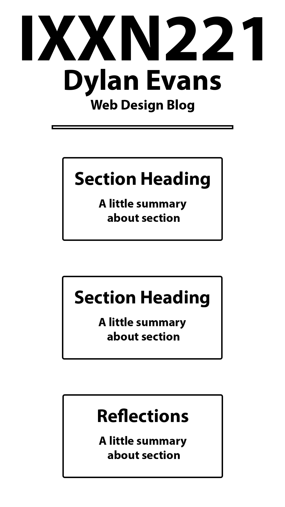
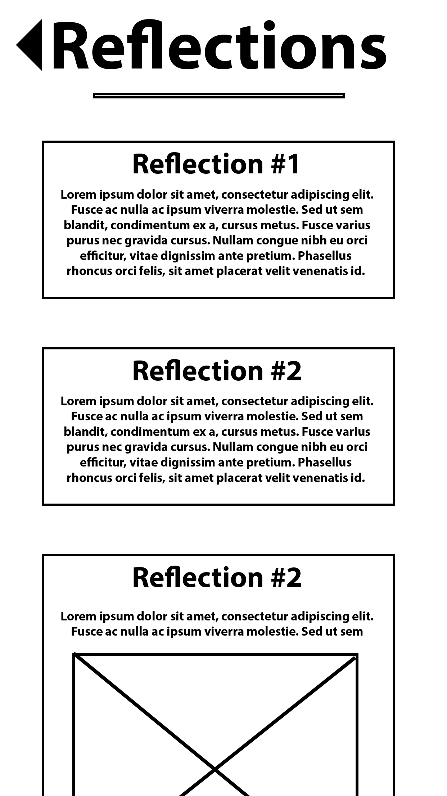
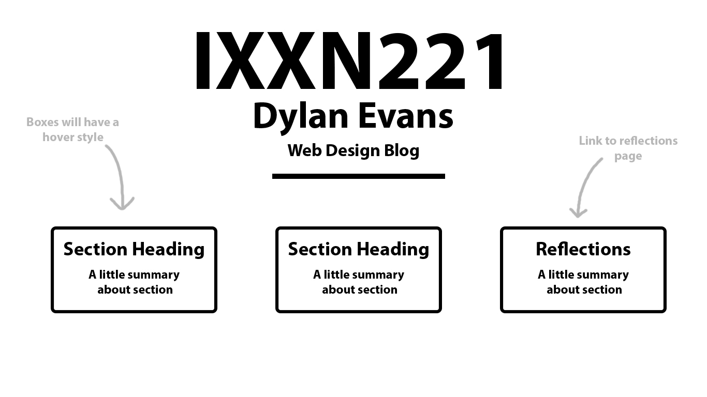
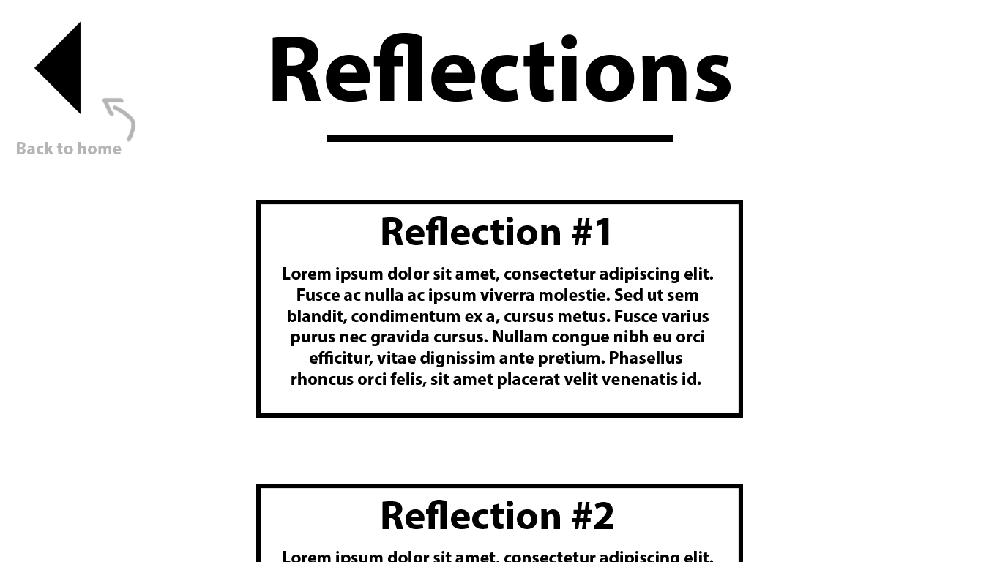

I started off with very simply defining the language my site is in to English so if it is being accessed via screen-reader, it won’t be trying to translate it and sounding strange and confusing for the user.
I feel like the layout of my site is quite simple so it could be quite easy to tab through but it seems a lot of my elements aren’t able to be selected which is an issue I couldn’t find a solution to but I think has something to do with the way I’m displaying content in divs rather than tables, and other alternate tags (which is something I need to work on).
I went through my page and added a title wherever felt necessary for blind navigation or navigation in general. This was not only good in terms of having sections of the site be easily identifiable by a visually impaired user, but also helped me cement the structure of my website in my head, and made me second guess whether some things could be done simpler or not be done at all.
I feel adding these title tags in would also be super useful if someone else was handling my code as it makes it a lot more legible and coherent.
Going forward, I need to solve more accessibility problems that have more to do with the structure of the website and the logistics of how I code it (tags, sequence, etc.).
If you were in a group of designers that’s goal was to create and demo a short-notice website redesign prototype, you’d most likely run into a lot of problems around version control. A group of designers working on a time budget means that they need all hands-on deck, which can get messy when multiple people are working on the same files. Git is the solution to this mess. Git lets the developers create branches where they can change, add, and remove features on the website and see how it looks without jeopardizing its functionality. Git is centralized which makes it very easy for all developers to find and access, this along with the branching system but makes committing changes and improvements super straightforward and painless regardless of how many people are working on the project. Because it is so easy for each designer to make changes, extremely rapid prototyping is possible which lets the development-feedback cycle work at high speed. When on a time-budget, rapid prototyping and quick feedback are essential for iterating a project in the right direction. Git is extremely helpful from the first stages where developers are spit balling ideas and seeing what sticks, to the late stages where they all have to put their work together and finalise the prototype.
Mobile Homepage Wireframe:
Mobile Reflections Wireframe:
Homepage Wireframe:
Reflections Wireframe:
